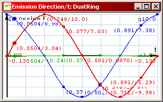
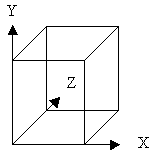
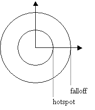

Parameters explained
Main screen
Emission Control:
Even if you’ve created a Particle and an Emitter, nothing will
happen before you’ve created an Emission. The Emissions determine
which particles are emitted by which emitters. To create a new Emission,
click New, then select the appropriate particle and emitter from the
dialog. Emissions can be deleted by clicking the Delete button, and
disabled with the Disable button. When exporting particle effects, the
Disabled effects are not included.
Max # of particles: This sets the maximum
number of active particles used in the particle system. The amount of
memory allocated for the particle effect is determined by this number. If
the maximum value is 500 particles, but the effect uses only 20 particles,
it is recommended to set the maximum value to 20 to save in-game memory.
Generally it is a good idea to create the effects with as few particles as
possible to conserve CPU. There are several pointers concerning this in
the Optimizing the effects section.
Particles emitted into:
- Worldspace:
the particles are emitted into the world coordinate space, and
aren’t connected with the emitter. If the emitter moves, the
particles leave a trail. This is the default setting, and useful in
most applications.
- Objectspace:
The particles are emitted into the object’s own coordinate
space, and follow the object around as it moves. This is handy for
glow / force field style effects.
New particles when maximum reached: this
determines what happens when the maximum number of particles has been
reached and further particles are still being emitted.
- Wait:
No new particles are emitted before the old ones have died. If your
particle emission rate is very high and the maximum amount limited,
you may experience breaks in particle emission.
- Replace oldest:
When new particles are emitted, the oldest particles (eg. the ones
that have been in the scene the longest time) in the effect disappear.
- Replace random:
When new particles are emitted, random particles will disappear.
Preview Configuration
KF
Scene: Allows you to load a background scene
to the particle preview screen for preview purposes. One background is
scene is provided with the example files, you can find it in the
examples\backgrounds\ directory (grid.txt). Click on the wide button (labeled
<none> if no scene is present) to load / change the background.
The scene is static and doesn’t move with the particle system. Press
Clear to remove the scene from the preview.
To
create a KF Scene, model it in 3DS Max (or another modeler that exports
KF2 format), export it into a KF2 file, and create a script for it.
Here’s the script file of the Grid background as an example:
[10m_grid]
{
[Geometry]
ExportData = data\grid.kf2;
[Animation] // block redundant if the scene has no animation
Index = 0;
filename = data\grid.kf2;
}
KF
Object: Allows you to insert an object to
the preview in order to see how the effect looks like when attached to an
object in the game, and to adjust its relative position to the object
pivot. One object is provided, you can find it in ..\examples\backgrounds\deserteagle.txt.
The KF object can move through the scene and the particle system is
attached to it. The object aligns itself to the movement direction like
the projectiles in the game. Press Clear to remove the object from
the preview. NOTE: If you want to place the muzzle flash of a gun
correctly in relation to the weapon, you must adjust the Emitter’s
Relative Position values. The preview configuration’s position
offset values are only used for preview purposes and are not exported.
Creating
a KF object is done through the same procedure as a KF scene. You can use
the example Grid file as a KF Object if you want, although this is not
very useful.
Gravity:
This sets the global gravity of the particle editor, allowing you to
preview the effect in different gravity settings. Note that this does not
affect the gravity setting used in the game. Default: 9.81m/s^2
Time scale: Changing the time scale multiplier allows you to
preview how your particle effect looks in slow motion. If you set the
multiplier to 0.1, the time passes one tenth of the default speed. Values
above 1 speed up the time.
Max. FPS: By changing the FPS, you can preview how a lower
frame rate affects the particles’ behavior. Some extremely quick
particle effects may be affected by skipped frames. The default value is
85.
Camera
follows at maximum distance of meters #:
When checked, the camera will follow the particle system. When not set,
the camera only orients itself towards the particle system.
Scene
position is locked: Useless feature, keep it
unchecked.
Gravity
affects system: When checked, the particle
system will fall down, affected by gravity. Useful when testing particle
effects that are meant to be attached to projectiles.
Frontplane: Sets the front clip value of the particle
system. If the camera moves closer to a particle than the Frontplane value
(in meters), the particle will not be drawn.
Backplane:
Sets the back plane value of the preview. If the particle is further than
the Backplane value in meters, the particle will not be drawn.
Object
Offset XYZ: Sets the position of the KF
object in the scene for preview purposes. Note that the particle system is
always attached to the object, so if you offset the object, the particle
system moves with it.
System
Offset XYZ: Sets the position of the
particle system in relation to the object for preview purposes. NOTE:
this does not affect the offset of the exported particle system. If you
need to offset the particle effects in order to correctly place the muzzle
flash on a weapon etc, you need to set the Emitter’s own Relative
Offset values.
System
Rotation XYZ: Rotates the particle system
for preview purposes, allowing you to see how the particle effect looks
with different rotations. Does not affect the exported particle effect. To
orient the effect in the game, the emitter must be rotated.
Object/System Velocity: Gives the
particle system a velocity to the specified direction, allowing you to
preview how the particle effect looks when attached to a moving emitter.
Combined with gravity, this allows you to “simulate” rocket
smoke trails, etc.
Particles
Particles are the basic elements of particle effects; the things you
see flying, falling and floating. They are actually flat, square polygon
“billboards” which always face the camera. They can be either
Additive or Alpha blended.
To create a particle, select
“Particle” from the selector under the Element and Emitter
Properties, then click the “New” button. Double-click on the
particle to pop up the particle properties window to edit its parameters.
NOTE: you can copy particles to the clipboard by selecting them in the
list and pressing CTRL-C or the Copy button. This allows you to transfer
particles from one file to another.
The particle’s parameters
are as following:
Name: The name of the particle. Standard text editing
features apply. You can also rename a particle by clicking on it in the
particle list and waiting for one second without moving the mouse.
Enable Particle Lighting: When this
is on, the particle’s shading is affected by the dynamic and point
lights in the level – in addition to the Color Graph. NOTE: If
the level’s point/spot lights are incorrectly set, this may lead to
strange results (all particles end up black since they receive no light).
This also increases the CPU load of the effect, so using this is not
recommended except in special cases, for example, if you have a room full
of smoke and a flickering spotlight.
Gravity Multiplier: This determines how the gravity affects
the particle. If the value is 1, the particle is directly affected by the
gravity. Values smaller than 1 divide the effect of gravity, values larger
than 1 multiply it. If the value is 0, the particle is unaffected by
gravity. Negative values make the particles “fall” upwards
(useful for flames and other lighter-than-air particles)
Air Resistance (El. Velocity): This determines how the
velocity of the particle affects its air resistance. The faster a particle
moves, the higher its air resistance.
-
Linear: The particle’s air
resistance is directly affected by its velocity.
-
Quadratic: The velocity affects the air
resistance to the second power.
-
Cubic: The velocity affects the air
resistance to the third power.
Air Resistance (El. Size): This
determines how the size of the particle affects its air resistance. The
larger the particle, the bigger its air resistance, if so desired. Both
the size multiplier and the particle’s own size graph are taken into
account.
-
None: The particle’s air resistance
is unaffected by its size.
-
Linear: The particle’s air
resistance is linearly comparable to its size.
-
Quadratic: The particle’s air
resistance is affected to the second power.
Air Resistance Constant: The overall
air resistance value of the particle. Generally, the higher the value, the
higher air resistance the particles have, and the sooner they slow down.
The constant is affected by the above two values (El. Velocity and El.
Size). If the value is zero, the particle has no air resistance. Negative
air resistance value actually accelerates the particle to whichever
direction it is traveling, giving rather interesting – or strange -
results. Experiment with these values until you get the results you want.
Particle
Animation
Animation
Type: This determines how the particle
bitmaps animate.
- Looping:
The bitmaps loop the sequence at the determined frame rate. Example:
a rotating piece of debris.
- Lifetime:
All the bitmaps are displayed in a sequence throughout the
particle’s lifetime, from first to the last. Example: a blob
of foam that dissipates into droplets.
Animation
FPS: Determines the frame rate of the
particle bitmap sequence. Only applicable if the animation type is set to
Looping.
Random
1st Frame: When on, the bitmap
sequence starts at a random frame when the particle is spawned – to
avoid all particles looking “synchronized”. Only applicable if
the animation type is set to Looping.
Random
rotation from # to #: Determines how many
degrees the particle billboard on-screen rotation is randomized when
emitted. If the values are equal, no randomization takes place. You can set
both values to (for example) -90 degrees to have all the particles rotated
by 90 degrees counter-clockwise but not randomized.
Randomize
rotation direction: Randomly inverts the
Rotation Graph of the particles.
Random
mirroring: Randomly flips the bitmap by X or
Y axis to increase particle variety. Some particles (for example, the
gasoline explosion fireball) should only be flipped horizontally and some
others only vertically, hence these are separate.
Size
Graph: This graph determines how the size of
the particle changes through its lifetime. NOTE: if you want all the
particles coming from the emitter to be larger, it’s a better idea
to adjust the Size Multiplier value of the emitter than the size graph,
because some other emitter in the effect may also be spawning the same
particles.
Rotation
Graph: This graph determines how the
particle rotates through its lifetime. This graph is inverted and
multiplied by the Emission Rotation Multiplier and Randomize rotation
direction values.
Vertex
Alpha Graph: This graph affects the alpha
blend opacity of the particle. With this you can make the particles fade
in and out. Note: all values in the graph that go above 255 are normalized
to 255.
RGB
Color Graph: Allows you to determine how the
color of the particle changes throughout its lifetime. There is a separate
graph for each color element (Red, Green and Blue).
Press C to activate the Windows Color Picker for easy value editing. NOTE:
the particle coloring is multiplicative. If the particle bitmap has
color in itself, any coloring applied will darken it and mix with the
bitmap. The best idea is to create all particle bitmaps as white as
possible, then use the color graph to color them. This allows you to use
the same bitmaps for multiple purposes.
Emitters
The particle emitters are the
”machines” that spew out particles according to their
parameters. To create a new Emitter, select “Particle Emitter”
from the selector under the Element and Emitter Properties and click the
“New” button. To edit the emitter’s properties,
double-click on it with the left mouse button. NOTE: you can copy emitters
to the clipboard by selecting them in the list and pressing CTRL-C or the
Copy button. This allows you to transfer emitters from one file to
another.
The parameters are as follows:
General
Name: The name of the emitter.
Standard text editing features apply.
Positions and Directions
Relative
Position: The X, Y and Z coordinates to
change the relative position of the emitter. For example, the muzzle flash
effects of the guns are created at the gun pivot point, and must be offset
by the Relative Position value to be placed at the gun muzzle.
Emission Direction Graph: This graph determines how
the direction of the particle emission changes through the emission cycle.
There are separate graphs for each direction (X, Y and Z).
Example: You can create a circular ring-like emission by setting the
emission cycle length very short (0.01 seconds), then changing two of the
graphs into sine curves offset by 90 degrees. This is how the ring-like
“body fall” dust clouds in Max Payne were created.

A circular emission
X
+/-, Y +/-, Z +/-: These constant values
determine how much the emission direction is randomized to each direction.
If you want to “spread out” the particles more when emitted,
increase the values perpendicular to the emission direction. If you want
the particles to be emitted at different velocities, increase a value
parallel to the emission direction.
Velocity
Inheritance Factor: Not applicable. Feature
not implemented.
Element Random Velocity Graph: Determines how the particle
emission direction is randomized overall throughout the emission cycle.
The value has two graphs, determining the maximum and the minimum amount
of randomization to be applied. This randomization randomizes the emission
in all directions (X/Y/Z).
Example:If you want to create a spray of water that first spreads a lot,
then turns into a uniform stream, create a graph that starts off high, then
quickly fades to zero.
Emitter Shape
The emitter shape determines what
kind of an area the particles are spawned in. You can choose between two
emitter shapes: Square and Sphere.
Square:
The particles are created within a box whose dimensions are adjustable.
Setting the values of any one axis to zero creates a flat emission plane.
Setting two axes to zero creates a line. If you want the particle
effect’s origo to be in the center of the box, the values must be
determined between symmetric negative and positive values (for example:
Min –2 meters, Max 2 meters makes 4 meters in total). If all three
dimensions are set to zero, all the particles will be created in the same
point.

Sphere:
The particles are created inside a spherical area whose radius is
adjustable. The Hotspot radius is where the most emissions take place, and
the Falloff radius “fades out” the particle emission
probability to zero (you can experiment with this by creating a very
short effect that creates thousands of tiny stationary particles, then
tweaking the hotspot and falloff values). The Falloff must be equal to
or larger than the Hotspot. If both values are set to zero, all particles
will appear in the same point.

Emission
Emission
Rate graph: This graph determines how many
particles are emitted per time unit throughout the emission cycle. The
value has two graphs, and the number of emissions is randomized between
the two values. Example: if you want to create a trickling water effect
that starts as a gush then reduces to slow dripping, start with a high
value, then ramp down the emission rate graphs. If you want the emission
rate to be completely steady, set both graphs to exactly the same value.
If you want the emission rate to be very uneven throughout, set one of the
graphs to zero, and set the other graph with a high value.
Cycle
Length: This value determines the overall
length of the emission in seconds. You can randomize the length of the
emission by entering a second value in the +/- field. The
randomization value must be smaller than the cycle length. The cycle is
then of different length every time it is initialized. Example: If you
shoot at the water coolers in Max Payne, you can notice that some water
trickles last longer than others. This is done with cycle length
randomization.
Cycle Looping: When checked, the emission will
restart immediately after it has ended. Example: You can create a random
flicker-like effect by looping a short emission whose length is randomized
a lot. Note that rapid cycle restarts cause some CPU overhead in the
levels, so use this sparingly. If you need to create a long, steady looping
particle effect, it's a better idea to leave this flag unchecked and instead
set it to loop in the script (looping = true.)
Element Lifetime Graph: Determines how long the
emitted particles live. The graph has two values, and the lifetime of each
particle is randomized between these two. Example: Being a graph, the
lifetime of the particles emitted can change through the cycle. For
example, if you have a fire effect that lasts 20 seconds, the values can
start off high, creating long-living high-reaching flames. As the cycle
continues, you can ramp down the curve so that the fire becomes lower and
lower, with the flames flickering with shorter and shorter lifetime, until
the fire goes out.
Particle Emitter
Size
Multiplier Graph: Determines the size of the
particles emitted through the cycle. There are two graphs, and the size of
each emitted particle is randomized between these two. If you want all the
particles in the effect to be larger or smaller, it is a better idea to
adjust the size multiplier graph than the particle’s own size graph
– since you may be using the same particle with another emitter too.
Example: With a ramp downwards, the effect can first emit large
particles, then as the cycle continues, the particles start off smaller.
Rotation
Multiplier Graph: Multiplies the
particle’s Rotation Graph. There are two graphs, and the rotation
multiplier of the particle is randomized between them. With values greater
than 1, the particle rotation increases, and with values less than 1, it
decreases. Negative values invert the graph. If all graphs are reset to
zero, the particles do not rotate, regardless of their rotation graph.
However, the particle’s Rotation Random still applies. Rotation
Multiplier Graph is somewhat less useful than the other parameters, and is
usually best used as two constant values (horizontal lines) with the
sample rate set to 2. Example: if you create a particle rotation graph
that goes up and down like a roller coaster, the particle
“swings” through its lifetime. The magnitude of the swinging
can be varied with the Rotation Multiplier Graph. This is how the snowflakes in Max Payne were created.
Light
In
addition to particles, the particle emitter can also create a Gouraud
point light which illuminates the environment and the characters (and the
particles whose lighting is activated). The light is always attached to
the emitter and moves with it. To activate the light, check the Use
Light checkbox. All emitters that have the light active have an (L) in
their name (this helps to avoid using several lights in an effect, as
lights cause graphics overhead). If you want to use the particle
effect only for light, you need to create a “dummy” particle
and a “dummy” emitter with all other values set to minimum so
that no particles are emitted.
The
parameters are as follows:
Light
Falloff Graph: Determines how the falloff
radius of the light changes through the emission cycle, ie how far the
light reaches. NOTE: rapid light falloff changes result rapid level
geometry tessellation
that cause CPU overhead. It is recommended to use the
falloff graph only in special cases. A constant value works well most of
the time. To fade out the light, it is a better idea to use the color
graph.
Light
Color Graph: With this, you can change the
color of the light through the emission cycle. The color consists of three
graphs, one for each color element (Red, Green and Blue). Press C when the
color graph window is active to open the Windows Color Picker for easy
editing. The lower the color values, the dimmer the light is.
Brightness:
This value has no effect in the current version of ParticleFX.
Light
Position Offset: You can offset the position
of the light from the emitter position; this may be necessary in some
cases. The offset value depends on the emission’s own Relative
Position offset. If you change the emission position offset, the light
offset moves with it.
|